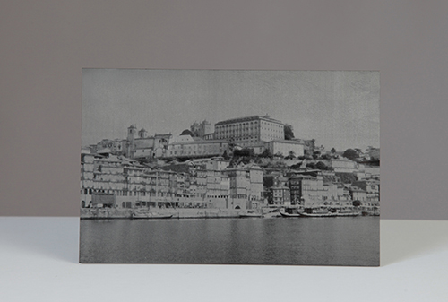
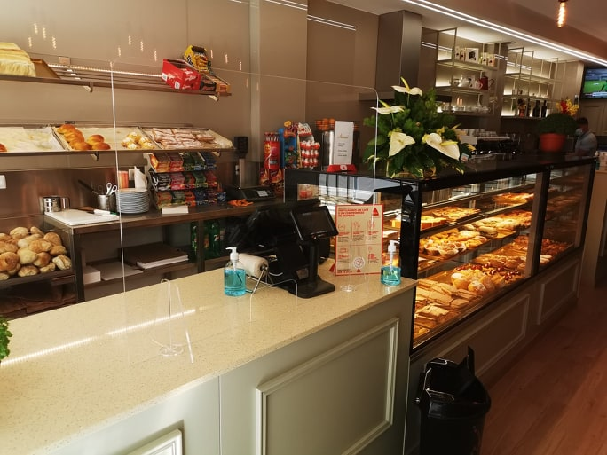

A LUZPLANA / GONDOMAR
O material ganha
uma utilidade.
Transformação de acrílico para exposição, informação e outras aplicações personalizadas.
O QUE FAZEMOS
Peças que começam
por uma necessidade.
A Luzplana trabalha na transformação de acrílico. A sua apresentação inclui expositores personalizados, painéis, serigrafia em painéis e porta-folhetos.
O portefólio reúne diferentes aplicações: desde suportes de balcão e caixas a elementos de decoração e separação de espaços.
Cada utilização coloca questões próprias de formato, dimensão e apresentação. Partilhe a sua referência para confirmar as possibilidades com a empresa.
Ver exemplos de aplicação

NO ESPAÇO
A peça e o lugar
onde vai ficar.
Além do objeto, importa o contexto: o balcão, a área disponível e aquilo que precisa de permanecer visível.
Uma fotografia do local ou um desenho ajuda a explicar essa relação na primeira conversa.
Partilhar uma ideiaDA APLICAÇÃO À PEÇA
O que tem
em mente?
Uma referência, um desenho ou o espaço onde a peça vai ficar. É por aí que começa a conversa.
Conversar com a Luzplana